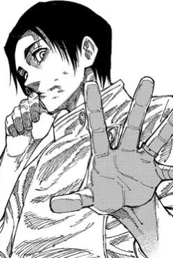

Yuuta Okkotsu: Poder oculto

Yuuta Okkotsu es uno de los personajes más interesantes de Jujutsu Kaisen 0, con un desarrollo de poder que lo convierte en uno de los hechiceros más fuertes.
Habilidades clave
- Rika: Espíritu maldito de grado especial
- Técnica de copia: Replica habilidades vistas
Desarrollo del personaje
Yuuta comienza como un personaje frágil emocionalmente, pero evoluciona a lo largo de la historia.